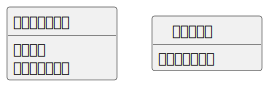

2. コアルール¶
コアルールは割込み処理が可能なターン制ゲームの開始から勝敗が決まるまでを定義します。
2.1. ターン¶
このルールを説明する上でターンとは持つことができるものとします。 ターンを持っているプレイヤーは先に行動できます。 ターンを持っているプレイヤーをターンプレイヤーといいます。
2.2. アクション¶
アクションとは、プレイヤーの行動を示します。 ターン制のゲームでは、プレイヤーは様々な行動を行います。 チェスであればコマを進めたり、ババ抜きであれば隣の人からカードを引くなどがあります。 それらをアクションと定義します。
2.3. チャンス¶
アクションを起こすことができる機会をチャンスといいます。 チャンスを持っている間は何度でもアクションを起こすことができます。
2.4. ステージ¶
アクションの解決順を整理するために使う領域です。 後入れ先出し方式で最後に積まれたアクションから順に解決されていきます。
2.5. アクションの定義項目¶
アクション、チャンス、ステージについて簡単に説明しました。 これらの概念を用いて、アクションに定義する項目を説明します。
アクションは次の項目を定義する必要があります。 他の項目は具体的にアクションを定義する際に、ゲームに合わせて追加して下さい。
効果（通常効果・即時効果）
タイミング
2.5.1. 効果¶
効果とはアクションの解決時にプレイヤーが行う行動です。 効果の中には、通常効果と即時効果があります。 違いについては、図(Fig. 2.3)を説明する際に分岐条件として登場します。
2.5.2. タイミング¶
タイミングとは、アクションを起こすことができる時を示します。 タイミングには「メイン」と「クイック」の2種類あります。
- メイン
ターンプレイヤーかつステージが空の時に起こせるアクションです。
条件をまとめると次のようになります。
チャンスを持っている
自分のターン
ステージが空
- クイック
いつでも起こせるため、アクションをステージに積み重ねることができます。
条件をまとめると次のようになります。
チャンスを持っている
2.5.2.1. エンドアクションの定義¶
定義するアクションの中で最低１つは ターンを別のプレイヤーにわたす効果を定義してください。 そうしないと、ターンが別のプレイヤーに渡らす、ゲームが進行しなくなります。
2.5.2.2. アクションのコントローラー¶
アクションを起こしたプレイヤーをそのアクションのコントローラーと呼びます。 効果はこのコントローラー視点で解釈されることになります。
2.6. コンポーネント¶
ゲームにてプレイヤーが保有する駒やカードのことをコンポーネントと定義します。 コンポーネントは次の項目を持っています。
- オーナー
コンポーネントの所有者を示します。大体のトランプゲームではトランプを1セットしか用いないため無視されますが、TCGのデッキなど個人所有のものを用いるゲームでは必要な項目となります。
- コントローラー
現在そのコンポーネントを操作しているプレイヤーを示します。オーナーとコントローラーは基本同じプレイヤーが設定されますが、コントロールを奪うアクションがある場合、オーナーとコントローラーは異なります。
注釈
コンポーネントとアクションのコントローラー
コントローラーは制御している人という意味になるため、コンポーネントとアクションのコントローラー制御する対象が異なることになります。 コンポーネントとアクションの属性を次の図に示します。アクションにはオーナーがいない点が異なります。

Fig. 2.1 コンポーネントとアクションの属性¶
2.7. 能力¶
能力とはアクションの効果とは異なる概念で、アクションを起こすことができたり、 アクションを誘発したりすることがでる力です。
能力を持つことができるのは、プレイヤーの他に駒やカードなどのゲームに登場するコンポーネントも持つことができます。 (Fig. 2.2)
![@startuml
skinparam defaultTextAlignment center
!define ICONURL https://raw.githubusercontent.com/tupadr3/plantuml-icon-font-sprites/v2.2.0
!includeurl ICONURL/common.puml
!includeurl ICONURL/font-awesome-5/chess_pawn.puml
FA5_CHESS_PAWN(P1C,コンポーネント)
:プレイヤー1: as Player1
:プレイヤー2: as Player2
(〇〇アクションを起こせる) as Act1 <<能力>>
(●●アクションを起こせる) as Act2 <<能力>>
(△△アクションを起こせる) as Act3 <<能力>>
Player1 ---> (Act1) : "能力"
Player1 ---> (Act2) : "能力"
P1C --> (Act3) : "能力"
Player2 ---> (Act1) : "能力"
Player1 ..> P1C : "所有"
@enduml](../_images/plantuml-976f45327f77d4f4ee1da59bff1cd262ba402df4.svg)
Fig. 2.2 能力のイメージ¶
能力には、次の種類があります。
- 常在型能力
能力が有効である場合、継続的に発揮される能力
- 誘発型能力
能力が有効である間に何かの契機でアクションを起こす能力
概ねのゲームでは、 ターン終了や駒をすすめるなどのアクションが定義されています。 そして、そのアクションを起こせる能力（常在型能力）を プレイヤーは保持しています。
2.8. コアフロー¶
この図にゲームの開始から勝敗が決まるまでの流れが集約されいます。(Fig. 2.3)
![@startuml
start
:[1]ゲーム開始;
:[2]ターンプレイヤーにチャンスを移動;
repeat
if ([3]アクションを起こすか？) then (Yes)
:[4]パス記録のリセット;
:[5]アクションを起こす;
:[6]誘発チェック;
if ([7]即時効果か？) then (Yes)
:[8]アクションの解決;
if ([9]勝敗判定) then (決着)
stop
endif
:[6]誘発チェック;
else (No)
:[10]ステージに追加;
endif
else (No)
:[11]パス記録に登録;
if ([12]全員がパスしたか？) then (Yes)
if ([13]ステージにアクションが存在するか？) then (Yes)
:[14]ステージから取出し;
:[8]アクションの解決;
if ([9]勝敗判定) then (決着)
stop
endif
:[6]誘発チェック;
:[2]ターンプレイヤーにチャンスを移動;
else (No)
endif
else (No)
:[15]チャンス移動;
endif
endif
repeat while()
@enduml](../_images/plantuml-5610bc91072f4c0a9e055e42017e28d61d12ab17.svg)
Fig. 2.3 コアフロー¶
- [1]ゲーム開始
先攻を決め、ゲームを始める準備を行います。
- [2]ターンプレイヤーにチャンスを移動
ターンを持っているプレイヤーにチャンスを移動します。
- [3]アクションを起こすか？
チャンスを持っているプレイヤーはアクションを起こすかを判断します。
- [4]パス記録のリセット
パスしたプレイヤーの記録をリセットします。
- [5]アクションを起こす
アクションを起こしこれからプレイヤーが行うことを宣言します。 ゲームによってアクションの起こし方は異なります。BlackPokerではアクション名を言い、コストの支払や対象を指定しアクションを起こします。 一方ババ抜きでは、隣のプレイヤーからカードを引く際に宣言せず暗黙にアクションが起きている場合もあります。
- [6]誘発チェック
ここに至るまでに誘発したアクションがないかチェックします。誘発した場合、効果を解決するかスタックに追加します。詳しいフローは 2.8.1 誘発チェック を参照してください。
- [7]即時効果か？
起こしたアクションが即時効果か通常効果か判定します。
- [8]アクションの解決
アクションの効果に定義されている内容を実行します。 その他にコンポーネントを捨て山に移動するなどゲームによって決まった処理があれば行います。 アクションの解決の中でも効果に定義されている内容を実行することのみを指す場合「効果を発揮する」と言います。
- [9]勝敗判定
ゲームの勝敗を判定します。決着した場合ゲームが終了します。判定の方法はゲームにより異なります。
- [10]ステージに追加
ステージというアクションを貯めておける領域に追加します。
- [11]パス記録に登録
パスしたプレイヤーを記録します。パス記録がリセットされるため、同じプレイヤー名は2回登録されません。
- [12]全員がパスしたか？
パス記録に全てのプレイヤー名が記録されているか判定します。
- [13]ステージにアクションが存在するか？
ステージにアクションが存在するか判定します。
- [14]ステージから取出し
最後にステージに追加されたアクションをステージから取出します。
- [15]チャンス移動
チャンスを持っているプレイヤーからチャンスを持っていないプレイヤーにチャンスを移動します。 チャンスを移動するルールはゲームによって異なります。
2.8.1. 誘発チェック¶
能力の中でも誘発型能力は、なにかをきっかけにしてアクションが起きる条件が定義されています。 誘発する条件は「〜の場合」、「〜時」などで記載されており、誘発するアクションは「〜を誘発する」と記載されています。
誘発チェックでは、誘発したアクションの効果を解決もしくは、ステージに追加します。 誘発したアクションのコントローラーは起因となった誘発型能力を持ったコンポーネントのコントローラーになります。 誘発チェックは次の図のように行います。(Fig. 2.4)
![@startuml
start
:[6-1]誘発したアクションをプレイヤー毎\nの誘発即時リストと誘発通常リストに追加;
while([6-2]誘発即時リスト、誘発通常リスト全体の件数判定) is (1件以上)
group 即時効果:プレイヤー単位に繰返し
note
順番はターンプレイヤーから
ターンが回る順に行う
end note
repeat :[6-3]プレイヤー毎に誘発即時リスト\nの即時効果のアクションを解決;
group 即時効果:アクション単位に繰返し
repeat :[6-4]誘発即時リストから即時効果の\nアクションを1つ取り出す;
:[6-5]即時効果のアクションを解決;
if([6-6]勝敗判定) then (決着)
stop
endif
:[6-7]誘発したアクションをプレイヤー毎\nの誘発即時リストと誘発通常リストに追加;
repeat while ([6-8]誘発即時リストの件数が0件でなけば繰り返す) is (YES)
end group
repeat while([6-9]全ての誘発即時リストの件数が0件でなければ繰り返す) is (YES)
end group
group 通常効果:プレイヤー単位に繰返し
note
順番はターンプレイヤーから
ターンが回る順に行う
end note
repeat :[6-10]プレイヤー毎に誘発通常リスト\nのアクションをステージに追加;
:[6-11]通常効果のアクションを\n任意の順でステージに追加;
:[6-12]誘発したアクションをプレイヤー毎\nの誘発即時リストと誘発通常リストに追加;
repeat while ([6-13]誘発リストに通常効果のアクションがあれば繰り返す) is (YES)
end group
endwhile (0件)
stop
@enduml](../_images/plantuml-3706c977d1e3edc6c020c1b97b3098f0c6d32a19.svg)
Fig. 2.4 誘発チェック¶
- [6-1]誘発したアクションをプレイヤー毎の誘発即時リストと誘発通常リストに追加
全てのプレイヤー、コンポーネントが持っている誘発型能力を確認します。 誘発したアクションをコントローラーのプレイヤー毎に即時効果と通常効果に分け、 プレイヤー毎の誘発即時リスト、誘発通常リストに追加します。
- [6-2]誘発即時リスト、誘発通常リスト全体の件数判定
プレイヤー毎の誘発即時リスト、誘発通常リストの合計件数を判定します。
- [6-3]プレイヤー毎に誘発即時リストの即時効果のアクションを解決
プレイヤー毎に誘発即時リストの即時効果のアクションを解決を行います。 順番はターンプレイヤーからターンが回る順にプレイヤー毎に行います。
- [6-4]誘発即時リストから即時効果のアクションを1つ取り出す
順番のプレイヤーは、 プレイヤー毎の誘発即時リストから1つ即時効果のアクションを取り出します。 取り出すアクションは任意に選択できます。
- [6-5]即時効果のアクションを解決
アクションの効果を解決します。 詳しくは [8]アクションの解決 参照。
- [6-6]勝敗判定
勝敗を判定します。 詳しくは [9]勝敗判定 参照。
- [6-7]誘発したアクションをプレイヤー毎の誘発即時リスト、誘発通常リストに追加
- [6-8]誘発即時リストの件数が0件でなけば繰り返す
順番のプレイヤーの誘発即時リストに未解決の即時効果がある場合、 即時効果の解決を繰返します。
- [6-9]全ての誘発即時リストの件数が0件でなければ繰り返す
プレイヤー毎の誘発即時リストに未解決のアクションがある場合、 再びプレイヤー毎に誘発即時リストの即時効果の解決を繰返します。
- [6-10]プレイヤー毎に誘発通常リストのアクションをステージに追加
プレイヤー毎に誘発通常リストのアクションをステージに追加します。 順番はターンプレイヤーからターンが回る順にプレイヤー毎に行います。
- [6-11]通常効果のアクションを任意の順でステージに追加
順番のプレイヤーは、 プレイヤー毎の誘発通常リストからアクションを任意の順でステージに追加します。
- [6-12]誘発したアクションをプレイヤー毎に誘発即時リストと誘発通常リストにまとめる
- [6-13]誘発通常リストにアクションがあれば繰り返す
プレイヤー毎の誘発通常リストにアクションがある場合、 順番を次のプレイヤーに渡し、プレイヤー毎に誘発通常リストのアクションをステージに追加します。
2.9. まとめ¶
コアルールについて説明しました。 すでにあるターン制のゲームからアクションを洗い出し、能力を整理することで割込処理を可能としゲームの新しい遊び方が見つけられます。 また、新しく作成するゲームに関してもコアルールを意識して作成することで、ルール追加がしやすいゲームが考えやすいと思います。